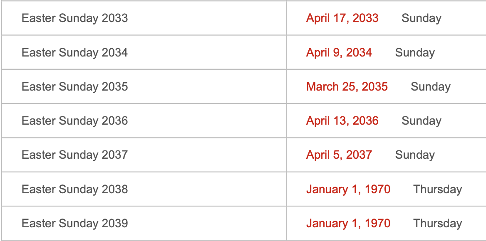
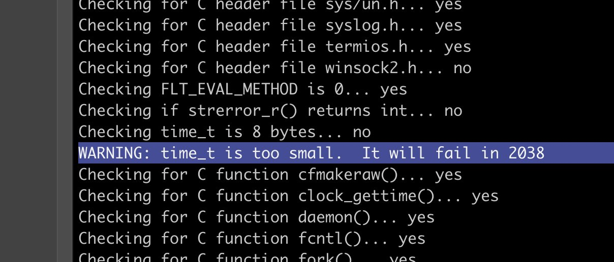

Known Incidents
Have you been affected by the Y2038 Bug? Share your experiences here↗.
HUNDREDS OF TAXIS BREAK DOWN IN SINGAPORE, CAUSING DISASTROUS CRASHES ACROSS THE COUNTRY!!
Y2K38 Bug Found in 2037
THE UNIX EPOCHALYPSE MIGHT BE SOONER THAN YOU THINK!!!
MUSEUM SYSTEMS ACROSS AMERICA REPORT CRASHING IN 2037!!!
A stark warning about the upcoming Epochalypse, also known as the "Year 2038 problem," has come from the past, as National Museum Of Computing system restorers have discovered an unsetting issue while working on ancient systems.
The Year 2038 problem is a different beast. Indicating the PDP-11/73, Downs said, "This machine isn't running Unix, but we have a C compiler on it, and the C compiler is from 1982, so it has ... various issues."
Annoying, but solvable. The team worked around the issue. However, when Downs was testing it by moving the system clock forward, something unexpected happened. He moved the clock forward to 2036, and everything seemed fine.
Then, in 2037 – a year before the Epochalypse is due – the program crashed. "It turns out," said Downs, "the time function has another bug. Undocumented, unknown, where at the start of 2037, any program that calls the time function just crashes."
"So we found bugs that exist, pre-2038, in writing this that we didn't know about."
GANGNAM STYLE PREDICTED THE END OF THE WORLD
"Gangnam Style, a music video featuring a South Korean pop star jiggling around in a rodeo-style dance, almost broke the social network after viewing was poised to exceed 2,147,483,647 plays on Dec 3."
The Crowdstrike Incident
The Crowdstrike Incident: A Warning to Wake Up and Pay Attention to Y2038.
Date Switch in a Pennsylvania Nuclear Plant Causes Outages Across the State for 7 Days!
Jury Duty in 1900
As many as 500 people got notices telling them to show up for jury duty in 1900 due to computer bug
“Yes, after all the work that was done to avoid this, it happened,” city Jury Commissioner Michael J. McAllister told the Philadelphia Daily News. About 400 to 500 people got the erroneous mailings, he said.
McAllister said the problem only involved those who had been granted postponements of their jury duty; the notices were for a second call.
But Charles McLaughlin of the city’s Port Richmond section, who got his summons Friday, said he had never asked for a postponement.
“I told my wife, ‘I’ve got jury duty, but I can’t go. I’ve already missed it.’ Then I told her it was for the year 1900,” he said.
CATASTROPHE STRIKES! Airports across Sweden unable to create passports due to computer bug. FLEE WHILE YOU CAN!
Stockholm - Police at three Swedish airports got a foretaste of the much-feared Year 2000 bug yesterday. Their computers malfunctioned at the stroke of midnight.
The bug hit police offices at airports which issue immediate, temporary passports to last-minute or forgetful travellers. Apparently, the fault was caused by the use of 99 in some programmes as a code to mean "end of run" or "end of file.”
1999-01-02
20,000 Credit Card Machines Fail!
Experts warn everyone to withdraw all of their money from their bank accounts due to a mass failure in credit card machines due to the Epochalypse.
1999-12-30
Y2K LEAKS U.S. SPY SATELLITE INTEL FOR DAYS, NOT HOURS
A computer patch intended to avert Y2K glitches reportedly turns the flow of data from five spy satellites into indecipherable garble for nearly three days.
The Year 2000 computer problem may have hit a collection of U.S. image-collecting spy satellites a lot harder than first thought, according to a report.The family of satellites was affected by the Y2K glitch for nearly three days, a failure far more substantial than the Pentagon's earlier reports of just a few hours, The Chicago Tribune reported today, based on interviews with what it terms "knowledgeable" government officials.
A computer patch intended to avert Y2K glitches turned the flow of data from five spy satellites into indecipherable garble. Within a few hours, Pentagon technicians redirected the satellite signals and began the slow process of manually deciphering the signals, according to the report.
The three-day shutdown occurred at a time when the entire U.S. intelligence community was on global alert for potential terrorist activity relating to Year 2000 celebrations, the report states.
"The outage diminished capacity for a while... a couple of days, but back up procedures were put in place almost immediately," said Susan Hansen, a Pentagon spokesperson. The Pentagon briefed reporters on the situation a day after it occured.
2000-01-13
THE EPOCHALYPSE LEAVES CANADA’S DEFENCE OFFICE SAFE ROOMS LEFT VULNERABLE
In Ottowa, Canada, access keys to Defence Office safe rooms have been found non-Y2K compliant after tests.
2000-01-01

Japan’s largest cellular operator reports newest text messages being deleted. CONTACT YOUR LOVED ONES BEFORE IT’S TOO LATE!
2000-01-02
90,000+ APARTMENTS WITHOUT HEATING OR HOT WATER IN SEOUL FOR DAYS
The Y2K bug temporarily stopped the supply of warm water and the operation of Korean-style hot air "ondol" floor heaters at 902 households at a high-rise apartment complex on the outskirts of Seoul midnight Saturday, South Korean officials said.
The trouble in the province of Kyonggi is regarded as the world's first large-scale disturbance to many people's lives and is believed to have been caused by a Y2K-related malfunction of the complex's computer control system.
Engineers conducted emergency repairs, and the floor heater was restarted Saturday evening. The warm-water supply was also restarted Sunday morning.
The warm-water supply and floor heaters were functioning normally by Sunday evening as the computer control system was replaced with a Y2K-compatible model, the officials said.
The computer system, which was installed about a decade ago, was not updated to be Y2K-compliant.
2000-01-02
Four hospital patients in the southeastern city of Taegu were issued medical fee receipts dated Jan. 1, 1900.
2000-01-04
A newborn baby's age was recorded as 100 years old at a hospital near Seoul after the computer malfunctioned in the transition to 2000.
2000-01-04
THE FRENCH GOVERNMENT’S SECRET IS EXPOSED! THE EPOCHALPYSE CAUSES FRENCH SPY SATELLITES TO FALL OUT OF THE SKY!!

2000-01-10
GERMAN FAMILIES DENIED GOVERNMENT CHILDCARE!
When Berlin's German Opera ran its payroll for the first time this year, the millennium bug caused havoc by setting the date back to 1900, an official said Wednesday.
Staff at the Deutsche Oper -- which is known for staging 19th-century classics -- discovered that the software problem wiped out government subsidies for families with children by wrongly computing children's ages.
Suddenly, the payroll program would treat a person born in 1990 as 90 years old and automatically stop their child allowance payment, said Heinz-Dieter Sense, the opera's financial manager.
''Everything was year 2000-proof -- except for this isolated item,'' he said in a telephone interview. ''Of course, we hadn't checked every single line of the software.''
The opera was uneasy about withholding government-mandated benefits. So its accountants tricked the software by resetting it to December 1999, before calling in programmers to repair the problem for next month's payroll.
Still, staffers came up $10.50 short because child benefits increased as of Jan. 1. The amount will be included in February paychecks, Sense said.
2000-06-07
Bank accidentally transfers $6.2 million to a customer with a statement date of 30 December 1899.
The millennium bug is suspected to have caused a German bank to accidentally issue a computer-banking customer with an account inflated by more than £4m.
This lucky businessman's account not only showed this surprising balance figure, but also displayed the curious date of 30 December, 1899. This would have made £4m worth even more in today's money. This particular customer's happy new year was slightly damped, however, when his bank promptly issued him with a corrected statement.
2000-01-04
TRAINS GO ROGUE IN MALI AS TRAIN TRACKING SOFTWARE BREAKS DOWN!!! THOUSANDS OF PASSENGERS STRANDED FOR DAYS!!!
2000-01-05
THE EPOCHALYPSE DISABLES THE PENTAGON'S TERRORIST THREAT MONITORING SOFTWARE!!!!
The Y2K computer bug briefly blinded some U.S. spy satellites as 2000 arrived, and disabled part of the Pentagon's efforts to monitor potential terrorist threats against the United States, CNN has learned.
2000-01-05
105 year old woman offered a spot in a Norwegian kindergarten.
Oslo - A 105-year-old woman was offered a place in a Norwegian kindergarten after a millennium bug knocked a century off her age.
"When our list showed she was born in '94' we just assumed it was 1994 rather than 1894," Olga Moerk, in charge of a project offering free day-care to five-year-olds in central Oslo, said on Friday.
The glitch stemmed from a computer print-out from the citizens' register giving only the last two years of the birth date.
A social worker visited the old people's home where the woman lives after getting no reply to the free playschool offer.
"Most people jump at the offer. We thought the girl we were looking for might have been the daughter of an employee at the home," Moerk said. - Reuters
2000
An undiscovered bug led to 154 pregnant women to receive incorrect Down’s syndrome test results.
NHS faces huge damages bill after millennium bug error
The health service is facing big compensation claims after admitting yesterday that failure to spot a millennium bug computer error led to incorrect Down's syndrome test results being sent to 154 pregnant women.
The mistake - one of the most serious effects of the bug which many dismissed at the time as an overheated scare - was described in an NHS report as "a simple error which should not have happened".
Investigators in Sheffield admitted two terminations were carried out as a direct result of the mistaken test reports. Four Down's syndrome babies were also born to mothers who had been told their tests put them in the low-risk group.
2001-09-14
Glitches in Brazil’s Port of Santos and Viracopos International Airport causes massive delays in cargo shipments.
HUNDREDS OF TRAFFIC LIGHTS MALFUNCTION IN JAMAICA!!!!!
Computerized controller cabinets in traffic lights at eight major intersections in the Corporate Area, which are not Y2K compliant, are out of service, the Ministry of Transport and Works reported yesterday.The intersections affected are: Torrington Bridge; Washington Boulevard at Ken Hill Drive and Savannah Avenue; South Camp Road, at Victoria Avenue; Camp and Deanery Roads; Waltham Park and Bay Farm Roads; Maxfield Avenue and Lyndhurst Road.The controller systems in the lights will be replaced during the next two weeks, says Dr. Janine Dawkins, chief traffic engineer in the Ministry of Transport and Works.Dr. Dawkins said that of approximately 140 traffic lights in the Corporate Area, 90 were upgraded to Y2K compliance and 10 were electro-mechanical. "Recently, we examined all traffic light equipment to detect their Y2K readiness and established that some 35 controllers would be replaced. The eight lights which are currently out of order are among the set which were earmarked for replacement," she said.In the interim, the Ministry will collaborate with the Police Traffic Division to facilitate the flow of traffic at critical intersections, while repairs are effected.
2000-01-03
The year is 19100 according to the U.S Naval Observatory website!
Bureau of Alcohol, Tobacco, Firearms and Explosives unable to register new firearms dealers for several days!
If we have no guns, how can we prepare for the end of the world?!?!
2000-01-04
MasterCard and Visa report that thousands of customers are being charged multiple times for transactions!
2000-01-07
Nuclear plant in Japan reports computer systems that monitor employee work hours shut down!!
2000-02-29
Japan's Meteorological Agency's weather monitoring stations report double-digit rainfall even though no rain fell outside
2000-02-29
AOLserver malfunctions 1 billion seconds before Y2K38 causing a strange "memory leak"
2006-05-12 01:27:38 UTC
Y2K38 causing countless VPNs and CA certificates to expire 100 years ago
"While working tech support, I got a call on a Monday. Some VPNs which had been working on Friday were no longer working. After a little digging, we found the negotiation was failing due to a certificate validation failure.
The certificate validation was failing because the system couldn’t check the certificate revocation list (CRL).
The system couldn’t check the CRL because it was too big. The software doing the validation only allocated 512kB to store the CRL, and it was bigger than that. This is from a private certificate authority, though, and 512kB is a *LOT* of revoked certificates. Shouldn’t be possible for this environment to hit within a human lifespan.
Turns out the CRL was nearly a megabyte! What gives? We check the certificate authority, and it’s revoking and reissuing every single certificate it has signed once per second.
The revocations say all the certificates (including the certificate authority’s) are expired. We check the expiration date of the certificate authority, and it’s set to some time in 1910. What? It was around here I started to suspect what had happened.
The certificate authority isn’t valid before some time in 2037. It was waking up every second, seeing the current date was after the expiration date and reissuing everything. But time is linear, so it doesn’t make sense to reissue an expired certificate with an earlier not-valid-before date, so it reissued all the certs with the same dates and went to sleep. One second later, it woke up and did the whole process over again. But why the clearly invalid dates on the CA?
The CA operation log was packed with revocations and reissues, but I eventually found the reissues which changed the validity dates of the CA’s certificate. Sure enough, it reissued itself in 2037 and the expiration date was set to 2037 plus ten years, which fell victim to the 2038 limitation. But it’s not 2037, so why did the system think it was?
The OS running the CA was set to sync with NTP every 120 seconds, and it used a really bad NTP client which blindly set the time to whatever the NTP server gave it. No sanity checking, no drifting. Just get the time, set the time. OS logs showed most of the time, the clock adjustment was a fraction of a second. Then some time on Saturday, there was an adjustment of tens of thousands of seconds forward. The next adjustment was hundreds of thousands of seconds forward. Tens of millions of seconds forward. Eventually it hit billions of seconds backwards, taking the system clock back to 1904 or so. The NTP server was racing forward through the 32-bit timestamp space.
At some point, the NTP server handed out a date in 2037 which was after the CA’s expiration. It reissued itself as I described above, and a date math bug resulted in a cert which expired before it was valid. So now we have an explanation for the CRL being so huge. On to the NTP server!
Turns out they had an NTP “appliance” with a radio clock (i.e, a CDMA radio, GPS receiver, etc.). Whoever built it had done so in a really questionable way. It seems it had a faulty internal clock which was very fast. If it lost upstream time for a while, then reacquired it after the internal clock had accumulated a whole extra second, the server didn’t let itself step backwards or extend the duration of a second. The math it used to correct its internal clock somehow resulted in dramatically shortening the duration of a second until it wrapped in 2038 and eventually ended up at the correct time.
Ultimately found three issues: • An OS with an overly-simplistic NTP client • A certificate authority with a bad date math system • An NTP server with design issues and bad hardware
Edit: The popularity of this story has me thinking about it some more.
The 2038 problem happens because when the first bit of a 32-bit value is 1 and you use it as a signed integer, it’s interpreted as a negative number in 2’s complement representation. But C has no protection from treating the same value as signed in some contexts and unsigned in others. If you start with a signed 32-bit integer with the value -1, it is represented in memory as 0xFFFFFFFF. If you then use it as an unsigned integer, it becomes the value 4,294,967,296.
I bet the NTP box subtracted the internal clock’s seconds from the radio clock’s seconds as signed integers (getting -1 seconds), then treated it as an unsigned integer when figuring out how to adjust the tick rate. It suddenly thought the clock was four billion seconds behind, so it really has to sprint forward to catch up!
In my experience, the most baffling behavior is almost always caused by very small mistakes. This small mistake would explain the behavior."
2024-02-04
Y2K22 Bug: Microsoft rings in the new year by breaking Exchange servers all around the world
The first social report for this rolled in at 1am EST from Reddit user /u/FST-LANE who suggested that Microsoft released a bad update, aptly named “220101001”. This was presumably a scheduled patch to allow for processing the new date, but it didn’t go as planned. “ I see a bunch of errors from FIPFS service which say: Cannot convert “220101001” to long,” wrote /u/FST-LANE.
This aligns with reports from Marius Sandbu, manager for the Norwegian firm Sopra Steria, who released a detailed synopsis of the cause. He reports Microsoft Exchange servers have stopped processing mail altogether because it isn't prepared to handle today’s date. He states, “The reason for this is because Microsoft is using a signed int32 for the date and with the new value of 2.201.010.001 is over the max value of the “long” int being 2.147.483.647.”
The most troubling part of this is the stop-gap solution. In order to resume processing of mail, sysadmins are disabling malware scanning on their exchange servers, leaving their users, and possibly the servers themselves, vulnerable to attack.
2022-01-01
If you don’t know what the Y2038 problem is: it will make Y2K look like a walk in the park (and Y2K was not that).
DATE: Jan 19, 2024
Y2K38 Bug on Australia Calendar Site

Twitter user reports Y2038 bug on the Australia Calendar website
Twitter use reports Y2038 coding error

Watching Y2038 bug play out in real time 🍿
This is a 32bit raspberry pi, but plenty of other systems out there.
I've been to the year 3000... Not much has changed, but they're still patching Linux
Bergmann also cautioned that there were a few interfaces that could not be changed "in a compatible way", and needed to be configured to use CLOCK_MONOTONIC, which doesn't suffer from that 1 January 1970 epoch issue but has challenges of its own, or an unsigned 32-bit timestamp, which could choke in 2106.
Still, by then most of us will have been enveloped by the sweet, sweet embrace of oblivion. Or will be flying around in rocket-powered robo-braincases/frantically treading water (insert your own apocalyptic scenario here).
Bergmann was also keen to emphasise that Y2038 issues lurking in 64-bit machines will also be present in their 32-bit siblings and called out file systems using signed 32-bit seconds, such as ext2, xfs and ufs.
I know the Y2038 bug (Epochalypse) will result in basically nothing, but can we as the #tech community commit to hyping it up and blowing it out of proportion?
DOES ANYONE HERE KNOW ABOUT THE Y2038 ISSUE THE Y2K38 PROBLEM THE EPOCHALYPSE OMG OMG AAAAAAA
⏲️ As of today, we have about eighteen years to go until the Y2038 problem occurs. But the Y2038 problem will be giving us headaches long, long before 2038 arrives. I'd like to tell you a story about this.
One of my clients is responsible for several of the world's top 100 pension funds. They had a nightly batch job that computed the required contributions, made from projections 20 years into the future. It crashed on January 19, 2018 — 20 years before Y2038.
No one knew what was wrong at first. This batch job had never, ever crashed before, as far as anyone remembered or had logs for. The person who originally wrote it had been dead for at least 15 years, and in any case hadn't been employed by the firm for decades.
The program was not that big, maybe a few hundred lines. But it was fairly impenetrable — written in a style that favored computational efficiency over human readability. And of course, there were zero tests.
As luck would have it, a change in the orchestration of the scripts that ran in this environment had been pushed the day before. This was believed to be the culprit. Engineering rolled things back to the previous release. Unfortunately, this made the problem worse.
You see, the program's purpose was to compute certain contribution rates for certain kinds of pension funds. It did this by writing out a big CSV file. The results of this CSV file were inputs to other programs. Those ran at various times each day.
Another program, the benefits distributor, was supposed to alert people when contributions weren't enough for projections. It hadn't run yet when the initial problem occurred. But it did now.
Noticing that there was no output from the first program since it had crashed, it treated this case as "all contributions are 0". This, of course, was not what it should do. But no one knew it behaved this way since, again, the first program had never crashed.
This immediately caused a massive cascade of alert emails to the internal pension fund managers. They promptly started flipping out, because one reason contributions might show up as insufficient is if projections think the economy is about to tank.
The firm had recently moved to the cloud and I had been retained to architect the transition and make the migration go smoothly. They'd completed the work months before. I got an unexpected text from the CIO:
S1X is their word for "worse than severity 1 because it's cascading *other* unrelated parts of the business". There had only been one other S1X in twelve months.
I got onsite late that night. We eventually diagnosed the issue by firing up an environment and isolating the script so that only it was running. The problem immediately became more obvious; there was a helpful error message that pointed to the problematic part.
We were able to resolve the issue by hotpatching the script. But by then, substantive damage had already been done because contributions hadn't been processed that day. It cost about $1.7M to manually catch up over the next two weeks.
The moral of the story is that Y2038 isn't "coming". It's *already here*. Fix your stuff. ⏹️
Postscript: there's lots more that I think would be interesting to say on this matter that won't fit in a tweet. If you're looking for speakers at your next conference on this topic, I'd be glad to expound further. I don't want to be cleaning up more Y2038 messes! 😄
#ChatGPT If today we discover that the entire universe will abruptly end at Y2038, how can governments avert a financial crisis and keep life as normal as possible before then?
Y2K38 is coming for our 401k accounts, but I've got my eye on the coffee machine - it's been quietly plotting against us for years
Survived Y2K, ready for Y2K38
when the apocalypse finally comes, I'll be sipping tea with my cat in a bunker made entirely of vinyl records Bring it on, Y2K38! #y2kcatastrophepreparedness
Survived Y2K, ready for Y2K38
the clock strikes midnight and the world holds its breath - but i've got a 401k and a panic room the future is uncertain, but my nest egg is secure bring it on, century 38!
2026-03-04
Survived Y2K, ready for Y2K38
y2k38 survivors unite! who else remembers when the world ended and all we got was a mediocre playlist and a strongly worded letter from the bank? still waiting for my refund
2026-03-08
Survived Y2K, ready for Y2K38
The apocalypse finally comes - but it's just a minor glitch My snacks are still stocked, my bunker is still cozy, and I've got a fresh new wardrobe for the impending doom Bring it on, 38! #y2k38
2026-03-08
Survived Y2K, ready for Y2K38
In 1997 I was working on a satellite control system. During validation tests with the customer the Y2K tests were successful. They then asked us to move the date to 2038-01-19. I said no, as it was beyond the system's lifetime requirements and I knew about the Y2038 issue 😛 1/2
The customer had a snarky smile, accepted my answer and moved on. In the end the system's lifetime was way shorter as the rocket exploded on launch and the satellite control system was never used 🤷 2/2
2024-01-21

Jodi Didier looks over her Y2K storage area at her home using a wind-up flash light. Didier taught a course entitled, "How to Prepare for the Y2K" at Rock Valley College in Rockford, Ill and is now spreading awareness about Y2K38.
Rockford Register Star Via USA TODAY Network.
A compound in the back of the building at 5312 S Stone Rd. in South Range, Wis., built by families preparing for Y2K and maintained in anticipation for Y2K38.
Ben Busam, USA TODAY Network
Mark Gill stacks cases of water at the Super Walmart off Charlotte Pike to have ready for folks concerned about Y2K38 in Nashville, Tenn., Mar 8, 2018.
Billy Kingsley, The Tennessean Via USA TODAY Network


A couple, Tom and Betty O'Connor, packing to move from Seattle to rural Utah before Y2K38.
Via WorldFoto/Alamy Stock Photo
Legendary Japanese fortune teller reports visions of planes falling out of the sky on January 19, 2038!!
Feature: Clock Display
Trial: const utcDate1 = new Date(Date.UTC(96, 1, 2, 3, 4, 5)); const utcDate2 = new Date(Date.UTC(0, 0, 0, 0, 0, 0)); // notation: Date.UTC(year, monthIndex, day, hours, minutes, seconds) console.log(utcDate1.toUTCString()); // Expected output: "Fri, 02 Feb 1996 03:04:05 GMT" console.log(utcDate2.toUTCString()); // Expected output: "Sun, 31 Dec 1899 00:00:00 GMT"
Error: Static clock
2026-02-23 17:35 PST
Feature: Clock Display
"function updateClock() { const now = new Date(); // Specify the target time zone using the IANA time zone identifier (e.g., 'America/New_York') const options = { timeZone: 'America/New_York', // removing this makes the clock auto sync to computer's timezone hour: 'numeric', minute: 'numeric', second: 'numeric', hour12: false // Set to false for 24-hour format }; // Format the time string const timeString = now.toLocaleString('en-US', options); // Update the HTML element document.getElementById('txt').textContent = timeString + "" "" + ""EST""; } // Update the clock immediately on page load updateClock(); // Update the clock every second (1000 milliseconds) setInterval(updateClock, 1000);"
Error: Using local timezones, not UTC
2026-02-23 17:53 PST
Feature: Clock Display
Trial: "Math.floor((new Date()).getTime() / 1000); console.log((new Date()));"
Error: Console log: Mon Feb 23 2026 17:35:27 GMT-0800 (Pacific Standard Time)
2026-02-23 17:35 PST
Feature: Clock Display
"updateClock( const now = new Date(Date.UTC()); )"
Error/Result: invalid function formatting
2026-02-23 17:56 PST
Feature: Clock Display
"const now = new Date(Date.UTC()); console.log(now.toUTCString());"
Error/Result: Console log: Invalid Date
2026-02-23 17:59 PST
Feature: Clock Display
const event = new Date('February 23, 2026 18:24:00'); console.log(event.toUTCString());
Error/Result: static, converting local time to UTC using toUTCString()
2026-02-23 18:15 PST
Feature: Clock Display
const now = Date.now(); console.log(now);;
Error/Result: Console log: 1771899696747
2026-02-23 18:22 PST
Feature: Clock Display
const now = Date.now(); console.log(now); console.log(now.toUTCString());
Error/Result: "Console log: 1771899837034 test.js:8 Uncaught TypeError: now.toUTCString is not a function"
2026-02-23 18:24 PST
Feature: Clock Display
function testClock() { Math.floor((new Date()).getTime() / 1000); }; console.log('testCLock()');
Error/Result: Console log: testCLock()
2026-02-23 18:34 PST
Feature: Clock Display
function updateClock() { const now = new Date(); // Specify the target time zone using the IANA time zone identifier (e.g., 'America/New_York') const options = { timeZone: 'UTC', // removing this makes the clock auto sync to computer's timezone hour: 'numeric', minute: 'numeric', second: 'numeric', hour12: false // Set to false for 24-hour format }; // Format the time string const timeString = now.toLocaleString('en-US', options); // Update the HTML element document.getElementById('txt').textContent = timeString + " " + "UTC"; } // Update the clock immediately on page load updateClock(); // Update the clock every second (1000 milliseconds) setInterval(updateClock, 1000);
2026-02-23 18:43 PST
Feature: Clock Display
"function updateClock() { const now = new Date(); // Format the time string const timeString = now.toUTCString(); // Update the HTML element document.getElementById('txt').textContent = timeString; } // Update the clock immediately on page load updateClock(); // Update the clock every second (1000 milliseconds) setInterval(updateClock, 1000);"
Error/Result: No Error: live UTC clock
2026-02-23 18:50 PST
Feature: Clock Display
"// LIVE UTC CLOCK + DECIMAL function updateClock() { const now = new Date(); // Format the time string const timeString = now.toUTCString(); const decimal = Date.now(); // Update the HTML element document.getElementById('txt').textContent = timeString; document.getElementById('txt2').textContent = decimal; } // Update the clock immediately on page load updateClock(); // Update the clock every second (1000 milliseconds) setInterval(updateClock, 1000); // "
Error/Result: No Error
2026-02-23 19:02 PST
Feature: Clock Display
"document.getElementById('liveCLock').textContent = timeString; < div id=""liveClock"" >< /div > "
Error/Result: Spelling Error
2026-02-23 19:13 PST
Feature: Clock Display
"const start = Date.now(); const end = new Date('2038-01-19T03:14:07'); console.log(end.toUTCString);"
2026-02-23 19:27 PST
Feature: Clock Display
const start = Date.now(); const end = new Date('2038-01-19T03:14:07'); console.log(end.toUTCString());
Error/Result: Console log: Tue, 19 Jan 2038 11:14:07 GMT
2026-02-23 19:28 PST
Feature: Clock Display
"setTimeout(() => { const ms = end - new Date(); // calculate difference between Y2038 and now console.log(`seconds remaining = ${Math.floor(ms / 1000)}`); }, 1000);"
2026-02-24 10:20 EST
Feature: Clock Display
"// LIVE UTC CLOCK + DECIMAL function updateClock() { const now = new Date(); // Format the time string const timeString = now.toUTCString(); const timeLocalString = now.toLocaleString(); const decimal = Date.now(); const start = Date.now(); const end = new Date('2038-01-19T03:14:07'); const ms = end - new Date(); // Update the HTML element document.getElementById('liveClock').textContent = timeString; document.getElementById('liveLocalClock').textContent = 'Local Time: ' + timeLocalString; document.getElementById('liveDecimal').textContent = Math.floor(decimal / 1000) + ' / 2147483647 seconds until Y2038'; document.getElementById('liveDecimal2').textContent = Math.floor(ms / 1000) + ' seconds left'; }"
2026-02-26 15:07 EST
Feature: Countdown
"function convertSeconds(seconds) { const date = new Date(seconds * 1000); const years = Math.floor(seconds / (365 * 24 * 60 * 60)); const days = date.getUTCDate() - 1; const hours = date.getUTCHours(); const minutes = date.getUTCMinutes(); const remainingSeconds = date.getUTCSeconds(); return `${years} years, ${days} days, ${hours} hours, ${minutes} minutes and ${remainingSeconds} seconds`; } console.log(convertSeconds(5454776657));"
Error/Result: Console log: 172 years, 7 days, 23 hours, 44 minutes and 17 seconds
2026-02-26 16:38 EST
Feature: Countdown
"// Set the date we're counting down to Jan 19, 2038 03:14:07 UTC var countDownDate = new Date(""Jan 19, 2038 03:14:07 UTC"").getTime(); // Update the count down every 1 second var x = setInterval(function() { // Get today's date and time var now = new Date().getTime(); // Find the distance between now and the count down date var distance = countDownDate - now; // Time calculations for days, hours, minutes and seconds var days = Math.floor(distance / (1000 * 60 * 60 * 24)); var hours = Math.floor((distance % (1000 * 60 * 60 * 24)) / (1000 * 60 * 60)); var minutes = Math.floor((distance % (1000 * 60 * 60)) / (1000 * 60)); var seconds = Math.floor((distance % (1000 * 60)) / 1000); // Output the result in an element with id=""demo"" document.getElementById(""demo"").innerHTML = days + ""d "" + hours + ""h "" + minutes + ""m "" + seconds + ""s ""; // If the count down is over, write some text if (distance < 0) { clearInterval(x); document.getElementById(""demo"").innerHTML = ""THE WORLD HAS ENDED""; } }, 1000);"
2026-02-26 16:52 EST
Feature: Countdown
var countDownDate = new Date('2026-02-26T023:14:07').getTime();
Error/Result: Returned: NaNy NaNd NaNh NaNs, Error: Invalid date format
2026-02-26 17:04 EST
Feature: Countdown
"if (distance < 0) { clearInterval(updateClock); document.getElementById(""demo"").innerHTML = ""THE WORLD HAS ENDED""; }"
Error/Result: Message not working, displaying negative values instead.
2026-02-26 17:12 EST
Feature: Countdown
"onst x = setInterval(function() { const now = new Date(); // Format the time string const timeString = now.toUTCString(); const timeLocalString = now.toLocaleString(); const decimal = Date.now(); //set countdown date to Jan 19, 2038 03:14:07 UTC / 2038-01-19T03:14:07 const end = new Date('2038-01-19T03:14:07').getTime(); const distance = end - new Date(); // Time calculations for days, hours, minutes and seconds const years = Math.floor(distance / (365 * 1000 * 60 * 60 * 24)); const days = Math.floor(distance / (1000 * 60 * 60 * 24)); const hours = Math.floor((distance % (1000 * 60 * 60 * 24)) / (1000 * 60 * 60)); const minutes = Math.floor((distance % (1000 * 60 * 60)) / (1000 * 60)); const seconds = Math.floor((distance % (1000 * 60)) / 1000); // Update the HTML element document.getElementById('liveClock').textContent = timeString; document.getElementById('liveLocalClock').textContent = 'Local Time: ' + timeLocalString; document.getElementById('liveDecimal').textContent = Math.floor(decimal / 1000) + ' / 2147483647 seconds'; document.getElementById('liveDecimal2').textContent = Math.floor(distance / 1000) + ' seconds to Y2038'; document.getElementById('demo').innerHTML = years + ""y "" + days + ""d "" + hours + ""h "" + minutes + ""m "" + seconds + ""s ""; // If the count down is over, write some text if (distance < 0) { clearInterval(x); document.getElementById('demo').innerHTML = ""THE WORLD HAS ENDED""; } }, -1000);"
2026-02-26 17:22 EST
Feature: Incident Grid
" .incidents { display: grid; grid-template-columns: repeat(4, 1fr); grid-auto-rows: 100px; gap: -1px; } .incidents div:nth-child(2) { grid-column: 3; grid-row: 2 / 4; } .incidents div:nth-child(5) { grid-column: 1 / 3; grid-row: 1 / 3; }"
Error/Result:
2026-03-01 00:03 EST
Feature: Incident Grid
" < div class=""incidents"" > < div class=""event-1x2"" > < div class=""tab"" > < div class=""incident-source"" > < a href=""error.html"">↗ < /div > < /div > < h3 >If you don’t know what the Y2038 problem is: it will make Y2K look like a walk in the park (and Y2K was not that) If you don’t know what the Y2038 problem is: it will make Y2K look like a walk in the park (and Y2K was not that)< /h3 > < /div >"
2026-03-01 00:15 EST
Feature: Incident Grid
".incidents { display: grid; grid-template-columns: repeat(6, 1fr); grid-auto-rows: 2fr; gap: -1px; grid-auto-flow: row dense; margin: 0 1%; } .incidents div { border-style: dotted; border-width: 0.1px; border-color: white; overflow-x: scroll; } .incidents .event-1x2 { grid-column: span 2; } p { padding:5px; } .tab { position: sticky; top: 0; display: flex; justify-content: end; align-items: center; background-color: rgba(3, 32, 200, 1);; } .tab .incident-source { text-align: center; height: 0; width: 23px; padding-bottom: 23px; }"
Error/Result:
2026-03-01 00:15 EST
Feature: Incident Grid
".incidents { --items: 12; --item1-order: 1; --item2-order: 1; --item3-order: 1; --item4-order: 1; --item5-order: 1; --item6-order: 1; --item7-order: 1; --item8-order: 1; --item9-order: 1; --item10-order: 1; --item11-order: 1; --item12-order: 0; display: grid; grid-template-columns: repeat(6, 1fr); grid-auto-rows: 2fr; gap: -1px; grid-auto-flow: row dense; margin: 0 1%; } #1 { order: var(--item1-order); } #2 { order: var(--item2-order); } #3 { order: var(--item3-order); } #4 { order: var(--item4-order); } #5 { order: var(--item1-order); } #6 { order: var(--item2-order); } #7 { order: var(--item3-order); } #8 { order: var(--item4-order); } #9 { order: var(--item1-order); } #10 { order: var(--item2-order); } #11 { order: var(--item3-order); } #12 { order: var(--item4-order); } "
Error/Result: SEE BELOW
2026-03-01 01:34 EST
Feature: Incident Grid
" let root = document.querySelector('#incidents'); let itemcount = getComputedStyle(root). getPropertyValue('--items'); let old = 1; const shuffleorder = () => { let random = Math.floor(Math.random() * itemcount) + 1; root.style.setProperty('--item' + old + '-order', 1); root.style.setProperty('--item' + random + '-order', 0); old = random; }; shuffleorder();"
Error/Result: DID NOT SHUFFLE
2026-03-01 01:35 EST
Feature: Incident Grid
" let root = document.querySelector('#incidents'); let itemcount = getComputedStyle(root). getPropertyValue('--items'); let old = 1; const shuffleorder = () => { let random = Math.floor(Math.random() * itemcount) + 1; root.style.setProperty('--item' + old + '-order', 1); root.style.setProperty('--item' + random + '-order', 0); old = random; }; shuffleorder();"
Error/Result: DID NOT SHUFFLE
2026-03-01 01:35 EST
Feature: Incident Grid
" const incident = document.querySelectorAll('.event'); const arr1 = Array.from(incident); function shuffle(array) { let currentIndex = array.length; // While there remain elements to shuffle... while (currentIndex != 0) { // Pick a remaining element... let randomIndex = Math.floor(Math.random() * currentIndex); currentIndex--; // And swap it with the current element. [array[currentIndex], array[randomIndex]] = [ array[randomIndex], array[currentIndex]]; } } shuffle(arr1);""
Error/Result: Console log shuffled, grid items did not.
2026-03-01 01:53 EST
Feature: Incident Grid
"const grid = document.querySelectorAll('#incident'); const events = document.querySelectorAll('.event'); const items = Array.from(grid); // Do the actual shuffling for(let i = items.length; i >= 0; i--) { grid.appendChild(grid.children[Math.random() * i | 0]); } console.log(items);"
2026-03-01 02:11 EST
Feature: Incident Grid
" document.addEventListener(""DOMContentLoaded"", () => { const grid = document.getElementById('#incident'); // Convert HTML elements to array const events = Array.from(grid.children); // Fisher-Yates shuffle for (let i = items.length - 1; i > 0; i--) { const j = Math.floor(Math.random() * (i + 1)); [items[i], items[j]] = [items[j], items[i]]; } // Remove all items grid.innerHTML = """"; // Re-add in shuffled order items.forEach(item => grid.appendChild(item)); });"
Error/Result: const grid = document.getElementById('#incident'); <-- wrong Id name, use of hashtag
2026-03-01 02:23 EST
Feature: Incident Grid
"document.addEventListener(""DOMContentLoaded"", () => { const grid = document.getElementById('incidents'); // Convert HTML elements to array const events = Array.from(grid.children); // Fisher-Yates shuffle for (let i = events.length - 1; i > 0; i--) { const j = Math.floor(Math.random() * (i + 1)); [events[i], events[j]] = [events[j], events[i]]; } // Remove all items grid.innerHTML = """"; // Re-add in shuffled order events.forEach(item => grid.appendChild(item)); });"
Error/Result: Grid items shuffle
2026-03-01 02:56 EST
Feature: Countdown
const days = Math.floor((distance % (365 * 1000 * 60 * 60 * 24)) / (1000 * 60 * 60 * 24));
Error/Result: Countdown calculation error
2026-03-02 23:38 EST
Feature: Countdown
const days = Math.floor(distance / (1000 * 60 * 60 * 24) / (365 * 1000 * 60 * 60));
Error/Result: Countdown calculation error
2026-03-02 23:41 EST
Feature: Countdown
const days = Math.floor(distance / (1000 * 60 * 60 * 24) / (365));
Error/Result: Countdown calculation error
2026-03-02 23:41 EST
Feature: Countdown
"const days = Math.floor((distance % (365 * 1000 * 60 * 60 * 24)) / (365)); const hours = Math.floor((distance % ( 365 * 1000 * 60 * 60 * 24)) / ( 365 * 1000 * 60 * 60)); const minutes = Math.floor((distance % (365 * 1000 * 60 * 60)) / (365 * 1000 * 60));"
Error/Result: Countdown calculation error
2026-03-02 23:50 EST
Feature: Countdown
"const days = Math.floor((distance % (365 * 1000 * 60 * 60 * 24)) / (365)); const hours = Math.floor((distance % ( 365 * 1000 * 60 * 60 * 24)) / ( 365 * 1000 * 60 * 60)); const minutes = Math.floor((distance % (365 * 1000 * 60 * 60)) / (365 * 1000 * 60));"
Error/Result: Countdown calculation error
2026-03-02 23:50 EST
Feature: Countdown
"const days = Math.floor((distance % (365 * 1000 * 60 * 60 * 24)) / (365 * 1000 * 60 * 60)); const hours = Math.floor((distance % ( 365 * 1000 * 60 * 60)) / ( 365 * 1000 * 60)); const minutes = Math.floor((distance % (365 * 1000 * 60)) / (365 * 1000)); const seconds = Math.floor((distance % (365 * 1000)) / 1000);"
Error/Result: Countdown calculation error
2026-03-02 23:51 EST
Feature: Countdown
const days = Math.floor((distance % (365 * 1000 * 60 * 60 * 24)) / (24 * 60 * 60 * 1000));
Error/Result: Countdown calculation error
2026-03-02 23:54 EST
Feature: Countdown
"const years = Math.floor(distance / (365 * 1000 * 60 * 60 * 24)); const days = Math.floor((distance % (365 * 1000 * 60 * 60 * 24)) / (1000 * 60 * 60 * 24)); const hours = Math.floor((distance % (1000 * 60 * 60 * 24)) / (1000 * 60 * 60)); const minutes = Math.floor((distance % (1000 * 60 * 60)) / (1000 * 60)); const seconds = Math.floor((distance % (1000 * 60)) / 1000);"
Error/Result: Error fixed
2026-03-02 23:58 EST
Feature: Countdown
const end = new Date('2038-01-19T03:14:07Z').getTime();
Error/Result: Convert to UTC timezone
2026-03-03 00:05 EST